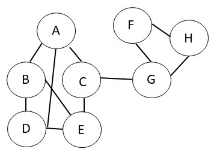

For the graph shown below, calculate the overall modularity score for
different choices of communities.

a.
What is the overall modularity score if all the nodes were in the same community?
b.
What is the overall modularity score if we have two
communities as follows. The first community contains A, B and
D. The second community contains the rest of the nodes.
c.
What is the overall modularity score if we have two
communities as follows. The first community contains A, B, C, D and
E. The second community contains the rest of the nodes.
d.
What is the overall modularity score if we have two
communities as follows. The first community contains C, E, G and
H. The second community contains the rest of the nodes.